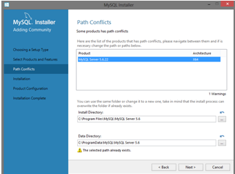

5. Аппаратное обеспечение. Для квалификации «Администратор баз данных»: Развертывание серверов баз данных
Аппаратные требования для СУБД и Сервера администрирования
В таблицах ниже приведены рекомендуемые минимальные аппаратные требования СУБД и Сервера администрирования, полученные в ходе тестирования. Полный список поддерживаемых операционных систем и СУБД см. в перечне аппаратных и программных требований.
Сервер администрирования и SQL-сервер на разных устройствах, в сети 50 000 устройств
Конфигурация устройства с Сервером администрированияПроцессор 4 ядер, 2500 МГц
ОЗУ 8 ГБ
Жесткий диск 300 ГБ, желателен RAID
Сетевой адаптер 1 Гбит
Конфигурация устройства с SQL-сервером
Процессор 4 ядер, 2500 МГц
ОЗУ 16 ГБ
Жесткий диск 200 ГБ SATA RAID
Сетевой адаптер 1 Гбит
Сервер администрирования и SQL-сервер на одном устройстве, в сети 50 000 устройств
Конфигурация устройства с Сервером администрирования и SQL-сервером
Процессор 8 ядер, 2500 МГц
ОЗУ 16 ГБ
Жесткий диск 500 ГБ SATA RAID
Сетевой адаптер 1 Гбит
Сервер администрирования и SQL-сервер на разных устройствах, в сети 100 000 устройств
Конфигурация устройства с Сервером администрирования
Процессор 8 ядер, 2,13 ГГц
ОЗУ 8 ГБ
Жесткий диск 1 ТБ, RAID
Сетевой адаптер 1 Гбит
Конфигурация устройства с SQL Server
Процессор 8 ядер, 2,53 ГГц
ОЗУ 26 ГБ
Жесткий диск 500 ГБ SATA RAID
Сетевой адаптер 1 Гбит
Тестирование проводилось со следующими настройками:
на Сервере администрирования включено автоматическое назначение точек распространения, либо точки распространения назначены вручную по рекомендуемой таблице; задача резервного копирования сохраняет резервные копии на файловый ресурс, расположенный на отдельном сервере; период синхронизации Агентов администрирования настроен в соответствии с таблицей ниже. Период синхронизации Агентов администрирования
Период синхронизации минуты, Количество управляемых устройств
15 10 000
30 20 000
45 30 000
60 40 000
75 50 000
150 100 000
Развертывание сервера базы данных на основании операционной системы Windows 7
Введение
Современные СУБД в основном являются приложениями Windows, так как данная среда позволяет более полно использовать возможности персональной ЭВМ, нежели среда DOS. Снижение стоимости высокопроизводительных ПК обусловил не только широкий переход к среде Windows, где разработчик программного обеспечения может в меньше степени заботиться о распределении ресурсов, но также сделал программное обеспечение ПК в целом и СУБД в частности менее критичными к аппаратным ресурсам ЭВМ.
Общепринятыми, также, являются технологии, позволяющие использовать возможности других приложений, например, текстовых процессоров, пакетов построения графиков и т.п., и встроенные версии языков высокого уровня (чаще - диалекты SQL и/или VBA) и средства визуального программирования интерфейсов разрабатываемых приложений. Поэтому уже не имеет существенного значения на каком языке и на основе какого пакета написано конкретное приложение, и какой формат данных в нем используется.
Целью работы является развертывание сервера базы данных на основании операционной системы Windows 7.
Данная работа объясняет принципы построения и применения данной архитектуры. Курсовая работа может применяться в области программирования, для изучения работы и принципов построения такой архитектуры
Теория
Виды серверов баз данных
Клиент-серверная СУБД располагается на сервере вместе с БД и осуществляет доступ к БД непосредственно, в монопольном режиме. Все клиентские запросы на обработку данных обрабатываются клиент-серверной СУБД централизованно. Недостаток клиент-серверных СУБД состоит в повышенных требованиях к серверу. Достоинства: потенциально более низкая загрузка локальной сети; удобство централизованного управления; удобство обеспечения таких важных характеристик как высокая надёжность, высокая доступность и высокая безопасность.
Наиболее часто используемые средства управления данными это MS SQL Server, Oracle Database, Apache, MySql.
Рассмотрим каждый из примеров.
Microsoft SQL Server - система управления реляционными базами данных (СУРБД), разработанная корпорацией Microsoft. Основной используемый язык запросов - Transact-SQL, создан совместно Microsoft и Sybase. Transact-SQL является реализацией стандарта ANSI/ISO по структурированному языку запросов (SQL) с расширениями. Используется для работы с базами данных размером от персональных до крупных баз данных масштаба предприятия; конкурирует с другими СУБД в этом сегменте рынка.
Oracle Database, (Oracle RDBMS) - объектно-реляционная система управления базами данных компании Oracle. Продукт, который компания выпускает с момента своего основания.
База данных, разработанная специально для работы в сетях распределенных вычислений Grid, предназначенная для эффективного развертывания на базе различных типов оборудования, от небольших серверов до мощных симметричных многопроцессорных серверных систем, от отдельных кластеров до корпоративных распределенных вычислительных систем. СУБД предоставляет возможность автоматической настройки и управления, что делает ее использование простым и экономически выгодным.
Apache. HTTP-сервер (произносится /?. ?pж. ?i/, назван именем группы племён североамериканских индейцев апачей; кроме того, является сокращением от англ. apatchy server; среди русскоязычных пользователей общепринято искажённое апамч) - свободный веб-сервер. Apache является кроссплатформенным ПО, поддерживает операционные системы Linux, BSD, Mac OS, Microsoft Windows, Novell NetWare, BeOS.
Основными достоинствами Apache считаются надёжность и гибкость конфигурации. Он позволяет подключать внешние модули для предоставления данных, использовать СУБД для аутентификации пользователей, модифицировать сообщения об ошибках и т.д. Поддерживает IPv6.
MySQL - свободная реляционная система управления базами данных. Разработку и поддержку MySQL осуществляет корпорация Oracle, получившая права на торговую марку вместе с поглощённой Sun Microsystems, которая ранее приобрела шведскую компанию MySQL AB. Продукт распространяется как под GNU General Public License, так и под собственной коммерческой лицензией.
MySQL является решением для малых и средних приложений. Обычно MySQL используется в качестве сервера, к которому обращаются локальные или удалённые клиенты, однако в дистрибутив входит библиотека внутреннего сервера, позволяющая включать MySQL в автономные программы.
Гибкость СУБД MySQL обеспечивается поддержкой большого количества типов таблиц: пользователи могут выбрать как таблицы типа MyISAM, поддерживающие полнотекстовый поиск, так и таблицы InnoDB, поддерживающие транзакции на уровне отдельных записей. Благодаря открытой архитектуре и GPL-лицензированию, в СУБД MySQL постоянно появляются новые типы таблиц.
Выбор среды
В случае потребности бизнес процессов компании в подготовке т обработке данных необходим выделенный вычислительный ресурс. Как правило, параметры такого узла напрямую зависят от масштаба базы данных, количества пользователей, динамики и характера обращений к данным.
MySQL является наиболее приспособленной для применения в среде СУБД. Для исполнения приложений клиента на большинстве хостинг-площадок провайдеры предоставляют небольшое количество ресурсов (как вычислительных, так и дисковых).
Основные преимущества MySQL:
- Многопоточность, поддержка нескольких одновременных запросов;
- Оптимизация связей с присоединением многих данных за один проход;
- Записи фиксированной и переменной длины;
- Odbc драйвер;
- Гибкая система привилегий и паролей;
- Гибкая поддержка форматов чисел, строк переменной длины и меток времени;
- Интерфейс с языками c и perl, php;
- Быстрая работа, масштабируемость;
- Совместимость с ansi sql;
- Бесплатна в большинстве случаев;
- Хорошая поддержка со стороны провайдеров услуг хостинга;
- Быстрая поддержка транзакций через механизм innodb.
По всем этим причинам MySQL стала незыблемым стандартом в области СУБД для web, а теперь в ней развиваются возможности для использования ее в любых критичных бизнес-приложениях.
Сервер базы данных SQL
Сервер БД обслуживает базу данных и отвечает за целостность и сохранность данных, а также обеспечивает операции ввода-вывода при доступе клиента к информации.
Архитектура клиент-сервер состоит из клиентов и серверов. Основная идея состоит в том, чтобы размещать серверы на мощных машинах, а приложениям, использующим языковые компоненты СУБД, обеспечить доступ к ним с менее мощных машин-клиентов посредством внешних интерфейсов.
Специфика сервера базы данных заключается в том, что данные как правило обрабатываются транзакционно, т.е. система запрашивает небольшой объем данных, проводит над ними операцию и затем сохраняет. Это накладывает определённые требования к аппаратной части сервера БД, а именно:
· Большой объем оперативной памяти для кэширования наиболее интенсивно используемых участков базы данных
· Высокопроизводительная дисковая подсистема, характеризующаяся в первую очередь способностью обрабатывать большое количество мелких запросов в единицу времени (iops - inputs/outputspersecond)
· Высокая вычислительная мощность для обработки информации
Язык SQL
Большинство СУБД используют язык SQL (StructuredQueryLanguage - язык структурированных запросов), так как он удобен для описания логических подмножеств БД.
Назначение SQL:
· Создание БД и таблицы с полным описанием их структуры;
· Выполнение основных операций манипулирования данными (такие как вставка, модификация и удаление данных из таблиц);
· Выполнение простых и сложных запросов.
Одна из ключевых особенностей языка SQL заключается в том, что с его помощью формируются запросы, описывающие какую информацию из базы данных необходимо получить, а пути решения этой задачи программа определяет сама.
Имя сервера
Каждый SQL Server имеет уникальное имя, как правило, совпадающее с именем компьютера, на котором он исполняется.
Пользователь SA
Как и в большинстве, если не во всех, серверах баз данных, в SQL Server существует пользователь, наделенный всеми административными полномочиями - это System Administrator или SA. После начальной установки сервера пароль SA пуст, поэтому первое действие администратора SQL Server - назначение этого пароля.
Хранимые и присоединенные процедуры
Существуют расширенные версии языка SQL, которые поддерживают такие расширения, как хранимые и расширенные процедуры, а также управление ходом программы через ветвления и организацию циклов.
Хранимые процедуры - это предварительно откомпилированные предложения языка SQL, которые сохраняются на сервере базы данных, использующей язык SQL. Клиент запускает хранимую процедуру с помощью команды EXECUTE<имя процедуры>. Таким образом, по сети передаются только два слова. Поскольку эта процедура уже откомпилирована и оптимизирована, серверу не нужно тратить время на компиляцию и оптимизацию.
В качестве хранимых процедур обычно используются часто выполняемые запросы.
Присоединенные процедуры (триггеры) подобны хранимым процедурам и исполняются в ответ на события, происходящие в БД. Когда с некоторыми приложениями языка SQL связана присоединенная процедура, выполнение этого предложения всегда запускает целую серию команд, входящих в эту процедуру. Присоединенная процедура автоматически выполняет одно или более предложений языка SQL, всякий раз, когда выполняет предложения INSERT, UPDATE или DELETE.
Самое важное применение присоединенных процедур заключается в обеспечении ссылочной целостности.
Операционная среда серверов
Примеры серверов БД: SQLSERVER (Microsoft), SQLBASESERVER, Oracle SERVER (Oracle Corporation), IBMDB2, Informix. Каждый сервер БД может работать на определенных типах компьютеров и сетей. Операционными системами серверов могут быть MSDOS, OS/2, Xenix, Unix, Dec VMS/ Рабочие станции пользователей обычно работают под управление MSDOS, OS/2, Xenix, Unix.
Существуют возможности смешанного использования различных ОС. Большая часть SQL-серверов может хранить описание БД в системном каталоге, который обычно бывает доступен пользователям. Для обращения к этому каталогу используются SQL-запросы. Реляционные СУБД могут использовать информацию, хранящуюся в системном каталоге для оптимизации SQL-запросов.
Ссылочная целостность реляционных БД
Большинство SQL-серверов поддерживают ссылочную целостность реляционных БД, состоящих из отдельных таблиц, которые могут быть объединены на основе общей информации, рассмотрим на следующем примере: база данных содержит таблицу клиентов и таблицу заказов, которые связаны полем номера клиента, содержащимся в обеих таблицах. Поскольку может быть более одного заказа от одного клиента, соотношение таблиц - "один-ко-многим". Когда таблицы соединены, то таблица клиентов является родительской, а таблица заказов - дочерней. Если запись-родитель стирается, а соответствующие ей дочерние записи - нет, то говорят, что дочерние записи "осиротели". Ссылочная целостность означает, что ни в одной таблице не допустимы записи-"сироты". Запись может осиротеть тремя способами:
1. Родительская запись удалена;
2. Родительская запись изменена таким образом, что связь между "родителем" и "потомками" потеряна;
3. Введена дочерняя запись без соответствующей родительской. Поддержание ссылочной целостности возможно несколькими способами:
1) Через ключи, хранящиеся в таблицах БД (родительские таблицы содержат первичные ключи, представляющие собой комбинации внешних ключей, которые могут быть найдены внутри каждой из дочерних таблиц).
2) Использование присоединенных процедур - процедурная ссылочная целостность. Присоединенные программы обеспечивают ссылочную целостность за счет автоматического выполнения предложений SQL всякий раз, когда встречается одно из предложений UPDATE/INSERT или DELETE (либо запрещается удаление родительской записи, либо стираются все дочерние записи).
Транзакции и целостность БД
Транзакция - совокупность логически взаимосвязанных запросов, направленных на согласованное изменение некоторого множества строк в одной или нескольких таблицах БД. Обычно при выполнении транзакций обновляется несколько таблиц и индексов, связанных с этими таблицами.
Для того чтобы гарантировать синхронизацию обновления и целостность данных, в серверах обычно используется принцип "все или ничего", означающий, что в БД вносятся либо все обновления или ни одно из них. С этой целью ведется журнал транзакций, в котором регистрируется информация обо всех затребованных изменениях. Этот журнал обеспечивает возможность "прокрутить назад" совершенные транзакции и восстановить предыдущее состояние БД. Это становится важно, когда изменения в БД, предусмотренные в одной транзакции, реализованы лишь частично, например, из-за сбоя аппаратуры.
Согласованность чтения и тупиковые ситуации
Характерна для многопользовательских СУБД. Для её реализации серверы обладают средствами автоматической блокировки.
Уровни, на которых блокируется таблица во время обновлений:
· Вся таблица;
· Страница (физический блок размером от 1 до 4 Кбайт, содержащий несколько записей).
Тупиковые ситуации
Серверы БД должны иметь средства определения состояния взаимоблокировки (dead lock). При возникновении такой ситуации выполнение одной из транзакций прерывается, выводя другую транзакцию из состояния вечного ожидания. Прерванная транзакция после исключения возможности её блокировки выполняется сначала.
Схемы оптимизации работ на языке SQL
Цель оптимизации состоит в обеспечении как можно более быстрого получения ответа на запрос с минимальным числом обращений к БД
Существует два типа оптимизации на языке SQL
· Оптимизация по синтаксису;
· Оптимизация по затратам;
Оптимизация по синтаксису использует тот факт, что в языке SQL эффективность запроса зависит от того, как он сформулирован. В данном случае оптимизация зависит от квалификации программиста. При оптимизации по затратам происходит сбор сведений о БД - числе таблиц, числе строк, типе данных в каждой строке, доступности индексирования для конкретного столбца и т.д. Оптимизатор использует эту информацию для выработки наилучшего плана обработки запросов.
Архитектура
SQL Server построен на принципах, так называемой "истинно параллельной" архитектуры баз данных, когда сервер для выполнения большинства операций использует родной механизм сред операционной системы, что позволяет достичь высокой производительности и масштабирования на системах с несколькими процессорами.
За счет активного использования нитей ядром сервера обеспечивается параллельное выполнение операций сканирования таблиц, параллельной загрузки данных в базы и таблицы, параллельное резервное копирование и восстановление данных, асинхронные операции работы с дисковыми устройствами и асинхронное опережающее чтение.
За счет механизма динамического распределения сред по процессорам, осуществляется автоматическая балансировка нагрузки. Поддержка в SQL Server маски использования процессоров, позволяет явно указывать на каких CPU будет исполняться сервер.

Рис 1.1 Схема реализации типичного SQL сервера и симметричного сервера Microsoft
Сетевой доступ
Как уже упоминалось, SQL Server поддерживает весьма широкий набор сетевых протоколов. Для каждого из них поддерживается режим прямого доступа с использованием "стандартных" для каждого протокола средств (например, Sockets для TCP/IP или IPS/SPX; Named Pipes для Net Bios), что дает возможность обращаться к серверу не только из среды Windows и OS/2, но и с платформ Mac и Unix. Набор компонентов, обеспечивающих доступ к серверу с клиента, называют также сетевой библиотекой (network library).
Дополнительно для протоколов TCP/IP, IPX/SPX и Named Pipes поддерживается доступ через защищенные вызовы RPC. Данный тип соединений называют trusted connection, или доверительные соединения, а протокол, соответственно, trusted protocol. Указанные типы соединений поддерживаются только на Windows платформах. Для поддержки trusted протокола в комплект поставки сервера входит сетевая библиотека Multi-Protocol Network Library.
Протоколы уровня приложений
Как и большинство серверов баз данных, SQL Server имеет собственный низкоуровневый протокол доступа, называемый Tabulated DataStream (TDS). Интерфейс TDS к средствам разработки называют DB-Library. Существуют версии библиотек для языков C/C++ и Visual Basic. Средствами TDS могут выполняться любые операции на сервере, однако использование его целесообразно только в тех случаях, когда применение SQL неэффективно. Как правило, TDS используют приложения, выполняющие чисто административные функции. Для непосредственного доступа к данным, Microsoft рекомендует использовать драйверы в стандарте ODBC, так как родной драйвер ODBC для SQL Server по утверждению самой Microsoft, имеет те же показатели по функциональности и производительности, что и DB-Library.
Основные компоненты
Как принято для серверных приложений Windows NT, ядро SQL Server реализовано в виде набора сервисов, для управления которыми используются административные утилиты.
Компоненты, образующие ядро SQL Server:
Собственно, сервер, который может быть запущен как сервис mssql server или как приложение с командной строки (Sqlservr. exe), в обоих случаях можно указать параметры запуска (через registry или в командной строке);
Компонент SQL Executive - сервис sql executive, обеспечивающий выполнение на основе расписания таких операций, как репликация данных, запуск заданий; кроме того на него возлагается контроль за наступлением событий и оповещение администраторов и/или операторов;
Компонент Distributed Transaction Coordinator - сервис MSDTC, отвечающий за выполнение распределенных транзакций;
Компонент SQL Mail, обеспечивающий интеграцию SQL Server в почтовую систему организации и позволяющий отправлять запросы и получать результаты их выполнения по почте. Для SQL Mail отдельный сервис отсутствует, так как старт почтового клиента осуществляет SQL Executive;
Часть2. Моделирование задачи
Диаграмма иерархии функций (BFD)
Диаграмма функциональных спецификаций (BFD) позволяет представить общую структуру ИС, отражающую взаимосвязь различных задач (процедур) для получения требуемых результатов.
Рисунок 2.1 - Диаграмма иерархии функций
Диаграмма потоков данных (DFD)
Функциональная модель представляет собой набор диаграмм потоков данных, которые описывают графически смысл операций и ограничений. ДПД отражает функциональные зависимости значений, вычисляемых в системе, включая входные значения, выходные значения и внутренние хранилища данных.
На рисунке 2.2 представлена диаграмма потоков данных для задачи развертывания сервера баз данных MySQL Server 5.6
Рисунок 2.2 - Диаграмма потоков данных
Диаграмма реализации сервера (UML)
Рисунок 2.3 - Диаграмма запуска MySQL Server 5.6
Описание потенциальной среды разработки
Основой информационной системы является база данных. Целью любой информационной системы является обработка данных об объектах реального мира. В широком смысле слова база данных - это совокупность сведений о конкретных объектах реального мира в какой-либо предметной области.
YEd Graph Editor - простое, но в тоже время достаточно мощное приложение, предназначенное для создания различного рода диаграмм. Оно позволяет быстро и эффективно рисовать, и редактировать различные диаграммы сети, процесса и организационной структуры.
Программа поддерживает работу со следующими видами диаграмм: иерархические (определяет направление основного потока в схемах и сетях, а также определяет иерархию уровней и зависимостей), органические (определяет данные присущие разным группам, дает представление о взаимосвязях сложно организованных структур), ортогональные (создает четкие диаграммы, с использованием ортогональных соединений в тех местах, где находится минимум пересечений и изгибов), древовидные (подходят для организации древовидных структур, основными элементами в построении которых являются направленные и радиальные стили), а также кольцевые (определяет топологии вида кольца и звезды в сетях и производит группировку объектов в соответствии со структурой сети и организует их на круги).
Все эти возможности позволят нарисовать Вам любую необходимую диаграмму. Работа с yEd не вызовет затруднений, так как интерфейс является довольно приятным, продуманным и понятным на интуитивном уровне.
Реализация
Установка MySQL Server 5.6 на Windows 7
Открываем страницу загрузки дистрибутива:
http://www.mysql.com/downloads/mysql/
Для Win 32: Windows (x86, 32-bit), MSI Installer Essentials - Recommended
Для Win 64: Windows (x86, 64-bit), MSI Installer Essentials - Recommended
После нажатия на кнопку Download вы увидите форму для регистрации, ее можно пропустить нажав на ссылку внизу ("No thanks, just start my download.)
Рис. 3.1 Запускаем установщик и нажимаем Next

Рис. - 3.2 Выбор типа установки Custom

Рис. - 3.3 Выбор пути установки
Выбираем компоненты. Здесь можно изменить путь установки файлов MySQL (выделить MySQL Server, нажать кнопку Change), а также путь для хранения баз данных (выделить MySQL Server Datafiles, нажать кнопку Change):
Рис. - 3.4 Выбор компонентов для установки
Рис. - 3.5 Установка продукта
Завершающий этап установки. Отмечаем опцию "Configure the MySQL Server now" (настроить сервер MySQL прямо сейчас) и нажимаем Finish:
Рис. - 3.6 Завершающий этап установки
Настройка MySQLServer 5.6
После завершения установки запускается MySQL Server Instance Configuration Wizard. Выбираем сценарий установки: Developer Machine - для установки на домашний компьютер
Отмечаем опции "Enable TCP/IP Networking" и "Enable Strict Mode". Port Number оставляем без изменений - 3306. Если к серверу планируются прямые подключения с других компьютеров, отмечаем опцию "Add firewall exception for this port" (открыть порт в брандмауэре windows).
Рис. - 3.7 Настройка первоначальных параметров
Установка пароля администратора (root). Опции "Enable root access from remote machines" и "Create An Anonymous Account" отмечать не рекомендуется, т.к. они снижают безопасность.

Рис. - 3.8 Ввод rootпароля и создание пользователя
MySQL поддерживает два основных типа БД (Inno DB - с поддержкой транзакций и My ISAM - без транзакций). Multifunctional Database - будет установлена поддержка БД обоих типов (наш выбор). Transactional Database Only - будет установлена поддержка только InnoDB. Non-Transactional database Only - будет установлена поддержка только myISAM.
Рис. - 3.9 Выбор служб и тип пользователя
Далее нажимаем Next и Execute. На этом базовая настройка завершена.
Рис. - 3.10. Применение параметров
После нажатия клавиши "Finish"происходит переход к следующему окну
Рис. - 3.11. Настройка сервера завершена
Установка и настройка выбранного сервера завершена. В итоге имеем следующее окно (рис. - 3.12.), с различными возможностями, обновление, удаление, настройка и прочие функции, доступные для управления сервером.
Рис. - 3.12. Установленный MySQL Server 5.6
Запуск и работа с MySQL server 5.6
При взаимодействии клиента и сервера MySQL, используется соединение TCP/IP, поэтому перед установкой необходимо установить протокол TCP/IP если система не использует сетевые соединения сети.
Для запуска MySQL-сервера в системах Windows 7 необходимо выполнить файл "MySQL 5.6 Command Line Client". Сервер запускается как командная строка. Затем вводится пароль (в данном случае пароля нет, поэтому "enter")
Рис. - 3.13. Запуск " MySQL 5.6 Command Line Client "
Сервер MySQL для Windows 7 обычно устанавливается как сервис, но также предусмотрена возможность запуска сервера MySQL без установки сервиса. Для того, чтобы установить MySQL как сервис, необходимо выполнить команду
mysqld-nt - install [3.1]
При этом появляется возможность управления сервером как из командной строки с помощью команд:
NET START mysql [3.2]
NET STOP mysql [3.3]
Предусмотрена возможность удаления сервиса, для этого следует выполнить команду
mysqld-nt - remove [3.4]
При отсутствии необходимости установки MySQL в качестве сервиса операционной системы сервер MySQL можно запускать следующим образом:
Mysqld-nt - standalone [3.5]
После установки серверной части MySQL для обеспечения безопасности данных необходимо указать пароль администратора MySQL и установить парольный доступ клиентов к базам данных.
Рис. - 3.14. Ввод команд для работы с сервером
Рис. - 3.15. Команды для работы с сервером. Команда "h" - help
Заключение
MySQL является наиболее приспособленной для применения в среде СУБД. Для исполнения приложений клиента на большинстве хостинг-площадок провайдеры предоставляют небольшое количество ресурсов (как вычислительных, так и дисковых).
В соответствии с поставленной целью было рассмотрено развертывание сервера базы данных на базе операционной системы Windows 7 в производственных условиях.
В ходе развертывания сервера базы данных на базе операционной системы Windows 7 в производственных условиях были выявлены несколько проблем при эксплуатации рабочих станций и разработаны пути решения проблем.